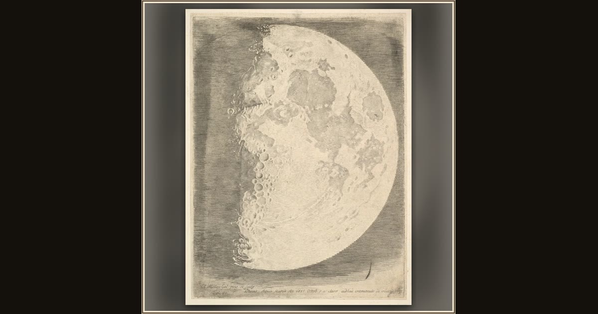

The Moon in its First Quarter
Claude Mellan · 1635 · met
Mellan's engraving of the half-lit moon, its craters drawn along the edge of light, beside Epicurus's several possible causes for the moon's waning and waxing. (10.94) Explore its place in Epicurus's Letters and Principal Doctrines, Letter to Pythocles, sectio